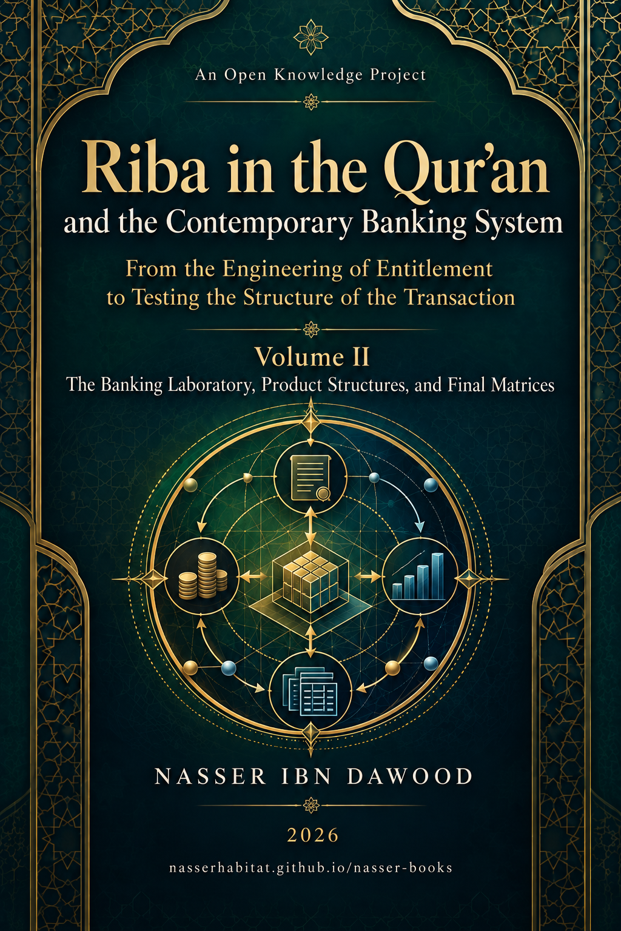

Nasser Ibn Dawood

Text extracted from the author-supplied Word edition; consult the original source.
Preparing the reader…
Riba in the Qur’an and the Contemporary Banking System
From the Engineering of Entitlement to Testing the Structure of the Transaction
Volume II — The Banking Laboratory, Product Structures, and the Final Matrices
A Condensed Conceptual English Adaptation
Nasser Ibn Dawood
2026
◆ ◆ ◆
nasserhabitat.github.io/nasser-books/
Source basis: Arabic Volume II, Parts VIII–X, Chapters 66–98, and the General Conclusion.
I. The Global Knowledge Manifesto
Knowledge is a universal right. The author firmly believes that wisdom should not be locked behind paywalls or language barriers.
Global Access Policy: All books in this library are available for free in multiple digital formats (PDF, HTML, DOCX, TXT).
The Digital Library: As of early 2026, the collection hosts 68 volumes (34 in Arabic and 34 in English), fully optimized for AI-assisted research and digital archiving.
Official Platforms: Main Website: nasserhabitat.github.io/nasser-books/
GitHub: nasserhabitat/nasser-books
◆ ◆ ◆
II. Translator’s Note: The Bridge of Meaning
This English edition is a condensed conceptual adaptation. It is not a word-for-word translation, but rather an "extraction of essence." It presents the core philosophical framework in accessible English, omitting the exhaustive linguistic debates and classical references found in the original Arabic text.
For the academic researcher: The original Arabic version remains the primary source for comprehensive linguistic analysis, detailed exegesis (Tafsir), and the complete bibliography.
For Volume II, this adaptation concentrates on the architecture of application: how the method developed in Volume I is brought into contact with contemporary banks, contracts, products, claim states, and documentary evidence without turning a structural audit into an automatic religious verdict.
A Note on Terminology
The Arabic term riba is retained rather than automatically replaced by the English word interest. Volume II continues the methodological rule established in Volume I: a modern label cannot be treated as a Qur’anic definition. Likewise, “Islamic bank,” “conventional bank,” “murabaha,” “tawarruq,” “credit card,” or “sukuk” are descriptive entry points, not verdicts.
OPEN means that the research question has not been closed by sufficient evidence. RESISTED means that a proposed universal formulation failed a stated test. UNKNOWN means that the documents of a particular case do not provide enough information. These statuses must not be strengthened in translation.
RIBA FINAL DEFINITION = NOT SEALED
RIBA CLASSIFICATION READINESS = OPEN / NOT PASSED
Condensed Contents
1. From the Qur’anic Audit Model to the Banking Laboratory
2. Part Eight — The Bank Is Not the Unit of Judgment
3. The Name Firewall: Conventional and Islamic Banks Under the Same Method
4. Part Nine — The Product Laboratory: What Is Actually Being Tested?
5. Sale and Lease Structures: Murabaha, Ijarah, and Their Variants
6. Partnership, Investment, and Deferred-Delivery Structures
7. Tawarruq and Organized Tawarruq: Path, Agency, Control, and Linkage
8. Credit Cards, Deposits, and Investment Accounts
9. Rescheduling, Late Claims, Distress, and Insolvency
10. Sukuk and Composite Structures
11. Part Ten — UTVM: A Unified Language for Transaction Audit
12. Ground and Boundary: The Refined E*-R2 Audit Candidate
13. Outcome, Claim Rank, and Reproducibility
14. What Volume II Establishes, Resists, and Leaves Open